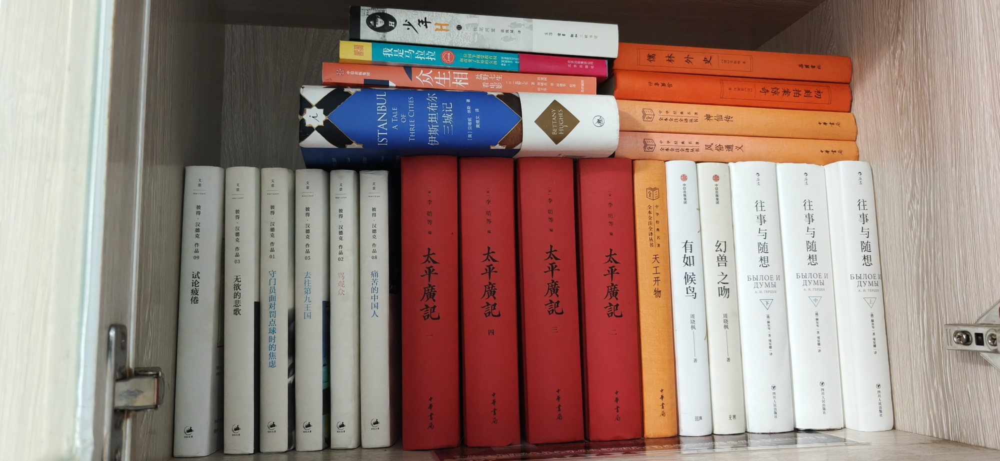

南房东第二层内

- 彼得·汉德克作品09 试论疲倦
- 彼得·汉德克作品03 无欲的悲歌
- 彼得·汉德克作品01 守门员面对罚点球时的焦虑
- 彼得·汉德克作品05 去往第九王国
- 彼得·汉德克作品02 骂观众
- 中国出版集团 众生相 盐野七生看电影 盐野七生
- 彼得·汉德克作品08 痛苦的中国人
- A TALE OF THREE CITIES 伊斯坦布尔三城记 [英]贝蒂妮·休斯著 黄烟文译 BETTANY HUGHES
- 我是马拉拉 一个改变世界的女孩 20世纪出版社
- 少年H 林尾河堂 张致属
- 太平广记 李昉等 中华书局
- 儒林外史
- 初刻拍案惊奇
- 全本全注全译丛书 天工开物 中华经典名著 中华书局
- 全本全注全评丛书 中华经典名著 神仙传 风俗通义 中华书局
- 有如候鸟 幻兽之吻 周晓枫 回声 无界
- 往事与随想 四川人民出版社
共 17 本书，上传于 2026-10-03 07:43:08。